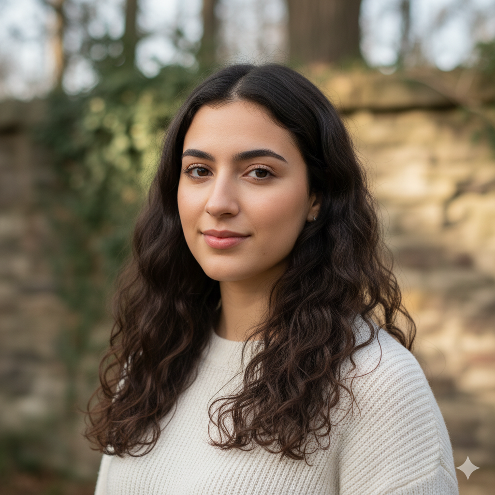

Our Team
Diego González Moreno
Especialista en la configuración y gestión de la base de datos en Firebase, estableciendo la arquitectura necesaria además de participar en el diseño y maquetación.
Samuel Santana García
Especialista en la implementación de la infraestructura en Firebase para asegurar una base de datos sólida, apoyando también en las tareas de diseño y maquetación.

Cathaysa Moreno Cabrera
Especialista en el diseño creativo de mockups, la definición de historias de usuario en Miro y la maquetación conjunta de la web en HTML y CSS.
Saúl Falcón Gil
Especialista en la fase de diseño visual y conceptual, además de trabajar en la traducción de esos diseños al código base del proyecto en HTML y CSS.
Edwin Johnson Osagie Batista
Especialista del proceso creativo inicial en Figma y Miro, contribuyendo posteriormente al desarrollo del código HTML y CSS del sitio.